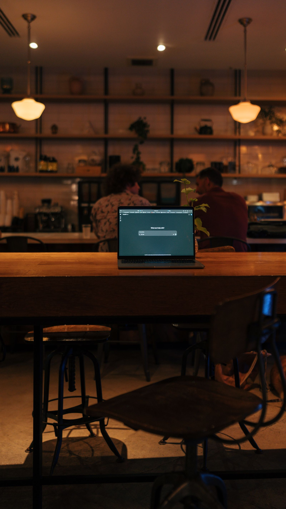
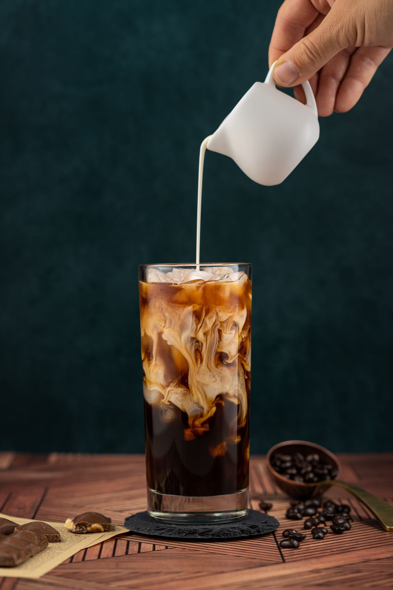

Sozo Coffeehouse
A downtown Omaha coffeehouse, open late, with room to stay a while.
About
Sozo Coffeehouse is a downtown Omaha coffeehouse. The coffeehouse serves specialty coffee, matcha lattes, refreshers, chai, and cinnamon rolls, and has rentable study rooms and pool tables, with open-mic nights and late hours.
Coffee, and room to stay
Specialty coffee
Matcha lattes
Refreshers
Chai
Cinnamon rolls
Rentable study rooms
Pool tables
Open-mic nights
Open late, with room to stay a while
Sozo Coffeehouse has rentable study rooms and pool tables, and hosts open-mic nights. The coffeehouse stays open late most nights. Call (402) 671-0450 to ask about a study room.
Gallery


All gallery photos are stock photos, labeled as such. They show coffee and cafe scenes, not this coffeehouse's drinks or space.
Visit
Address: 1314 Jones St, Omaha, NE 68102
Hours: Monday 9:00 AM to 10:00 PM. Tuesday 9:00 AM to 6:00 PM. Wednesday and Thursday 9:00 AM to 10:00 PM. Friday and Saturday 9:00 AM to 12:00 AM. Sunday 12:00 PM to 10:00 PM.
Phone: (402) 671-0450
Contact
Sozo Coffeehouse serves Omaha, NE. Questions? Call (402) 671-0450.